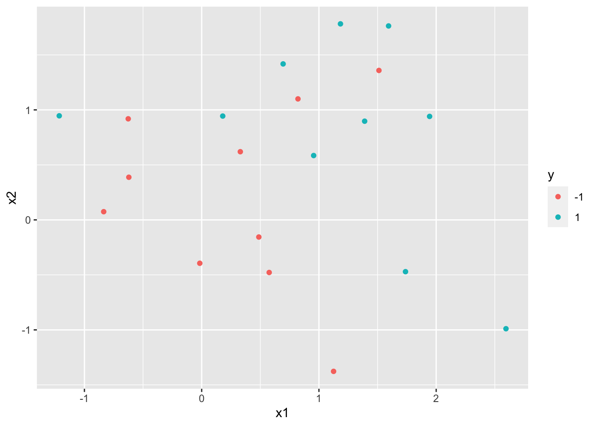
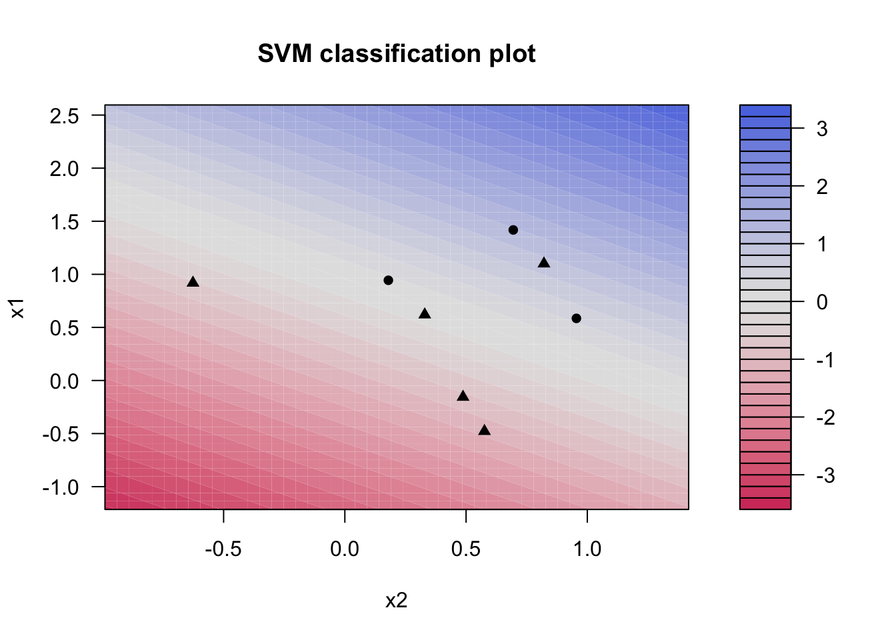
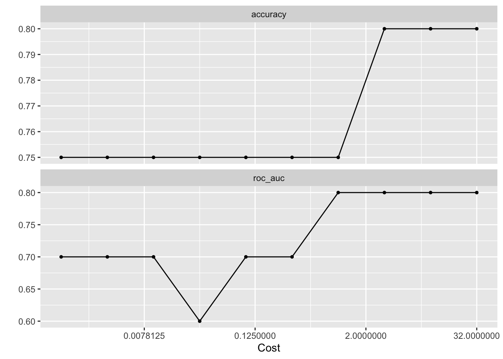

9 Support Vector Machines
9.1 Support Vector Classifier
set.seed(1)
sim_data <- tibble(
x1 = rnorm(20),
x2 = rnorm(20),
y = factor(rep(c(-1, 1), 10))
) %>%
mutate(x1 = ifelse(y == 1, x1 + 1, x1),
x2 = ifelse(y == 1, x2 + 1, x2))
ggplot(sim_data, aes(x1, x2, color = y)) +
geom_point()
svm_linear_spec <- svm_poly(degree = 1) %>%
set_mode("classification") %>%
set_engine("kernlab", scaled = FALSE)
svm_linear_fit <- svm_linear_spec %>%
set_args(cost = 10) %>%
fit(y ~ ., data = sim_data)
svm_linear_fit## parsnip model object
##
## Fit time: 746ms
## Support Vector Machine object of class "ksvm"
##
## SV type: C-svc (classification)
## parameter : cost C = 10
##
## Polynomial kernel function.
## Hyperparameters : degree = 1 scale = 1 offset = 1
##
## Number of Support Vectors : 12
##
## Objective Function Value : -108.1122
## Training error : 0.2
## Probability model included.
library(kernlab)##
## Attaching package: 'kernlab'## The following object is masked from 'package:purrr':
##
## cross## The following object is masked from 'package:ggplot2':
##
## alpha## The following object is masked from 'package:scales':
##
## alpha
plot(svm_linear_fit$fit)
svm_linear_fit <- svm_linear_spec %>%
set_args(cost = 0.1) %>%
fit(y ~ ., data = sim_data)
svm_linear_fit## parsnip model object
##
## Fit time: 28ms
## Support Vector Machine object of class "ksvm"
##
## SV type: C-svc (classification)
## parameter : cost C = 0.1
##
## Polynomial kernel function.
## Hyperparameters : degree = 1 scale = 1 offset = 1
##
## Number of Support Vectors : 18
##
## Objective Function Value : -1.5443
## Training error : 0.2
## Probability model included.
svm_linear_wf <- workflow() %>%
add_model(svm_linear_spec %>% set_args(cost = tune())) %>%
add_formula(y ~ .)
set.seed(1234)
sim_data_fold <- vfold_cv(sim_data, strata = y)
param_grid <- grid_regular(cost(), levels = 10)
tune_res <- tune_grid(
svm_linear_wf,
resamples = sim_data_fold,
grid = param_grid
)
autoplot(tune_res)
best_cost <- select_best(tune_res, metric = "accuracy")
svm_linear_final <- finalize_workflow(svm_linear_wf, best_cost)
svm_linear_fit <- svm_linear_final %>%
fit(sim_data)
set.seed(2)
sim_data_test <- tibble(
x1 = rnorm(20),
x2 = rnorm(20),
y = factor(rep(c(-1, 1), 10))
) %>%
mutate(x1 = ifelse(y == 1, x1 + 1, x1),
x2 = ifelse(y == 1, x2 + 1, x2))
augment(svm_linear_fit, new_data = sim_data_test) %>%
conf_mat(truth = y, estimate = .pred_class)## Truth
## Prediction -1 1
## -1 8 2
## 1 2 8